This module allows to create internal transfer from POS, You can send/receive stock between shops
App Features
Transfer stock between shops
Create internal transfer from pos screen
User can create send/receive stock request from pos
Also compatible with community and enterprise version
POS Internal Transfer
There are three shops
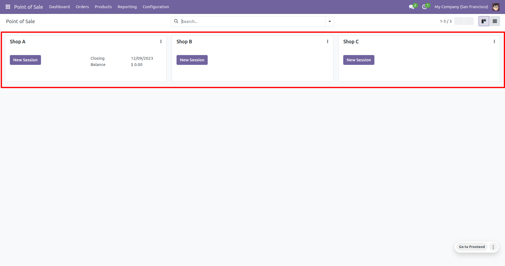
You need to activate Stock Transfer for the shop and set stock shop location.
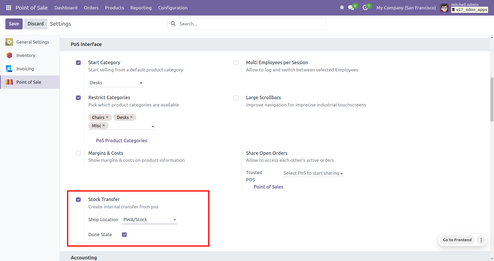
Add products and click on Stock Transfer button to open transfer details popup, there is two options Send/Receive stock and Send to/Receive From Shop selection and State of the transfer Draft/Done
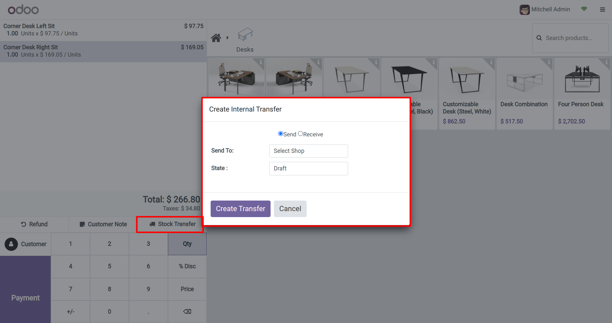
Dropdown for the shop selection Send To/Receive From
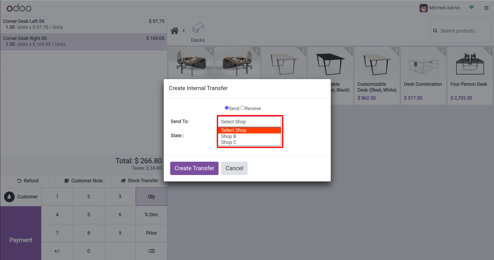
State selection to create internal transfer in Draft or Done
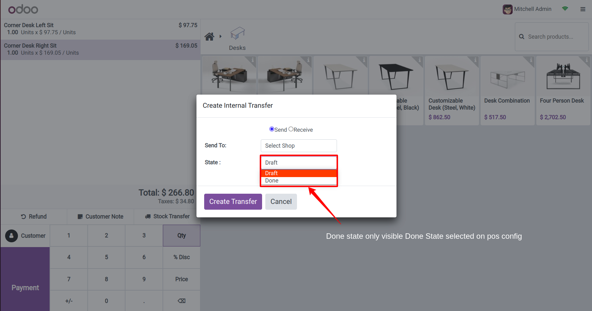
Create Transfer button to create internal transfer from Shop A -> Shop B shop
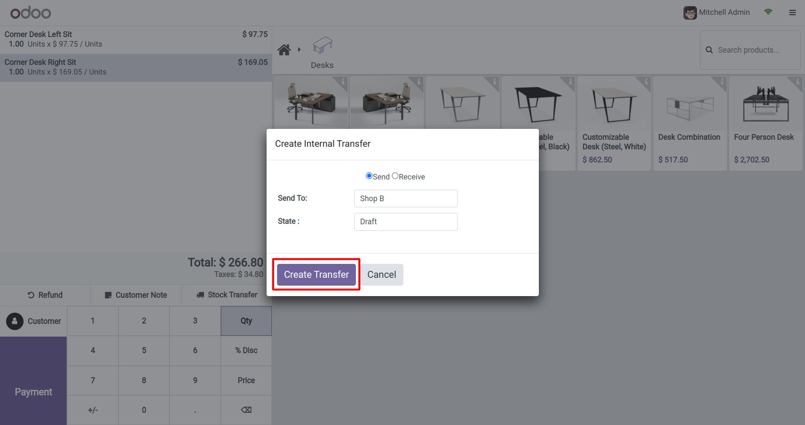
When click on Create Transfer button system will popup reference of the created internal transfer
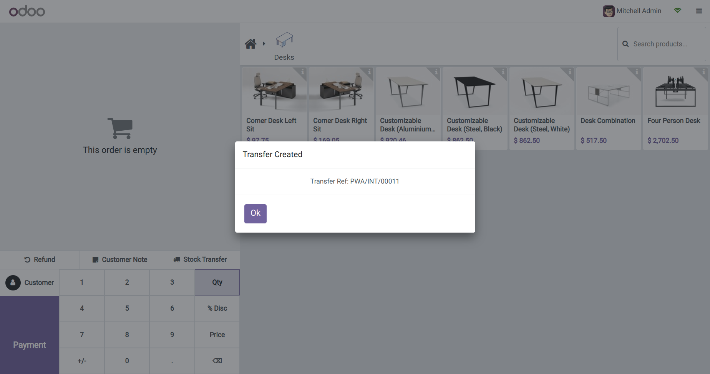
Smart button to open internal transfer from the session
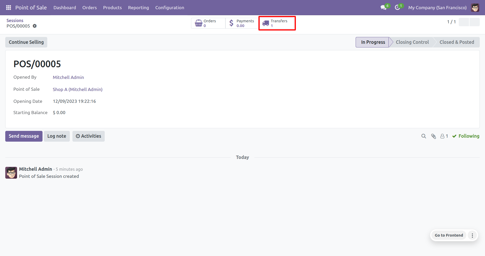
You can see the internal transfer created from PWA -> PWB in draft state
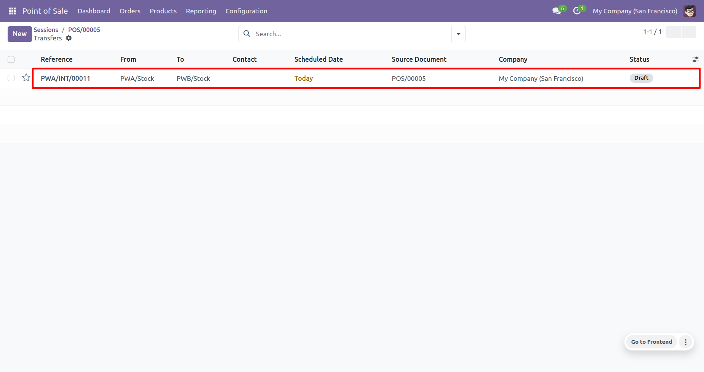
Internal transfer with products and Source Document of pos session, so you can search transfers by session name
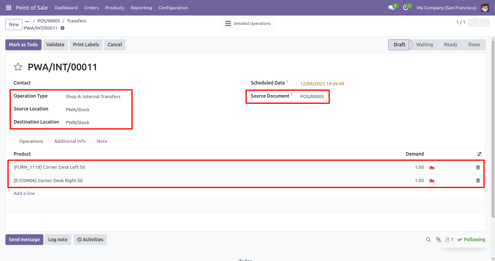
Also you can create receive transfer to take stock from another shop, we are creating from Shop B -> Shop A transfer
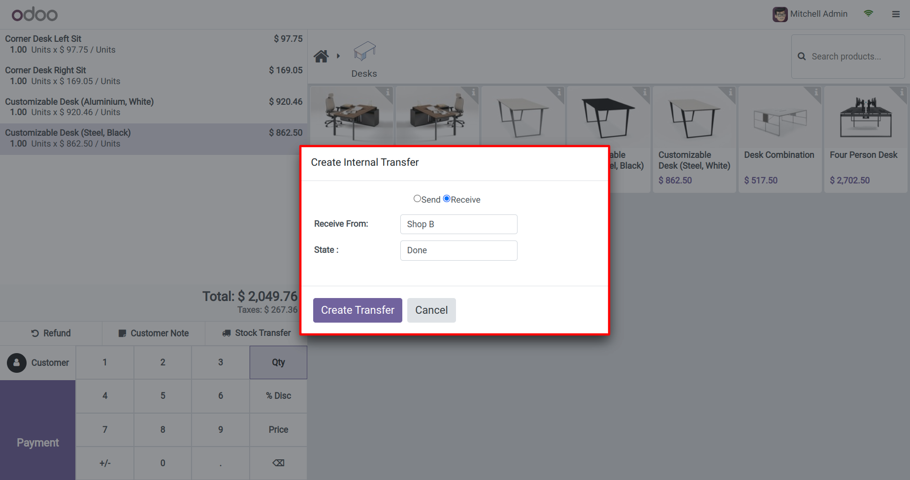
You can see the reference of the internal transfer for Shop B
You can see internal transfer from PWB -> PWA with products.
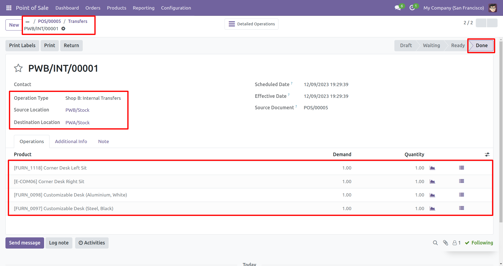
Contact US
Email : prewayit@gmail.com
Note: We give free support incase any bug or issue in our apps (Except data recovery).